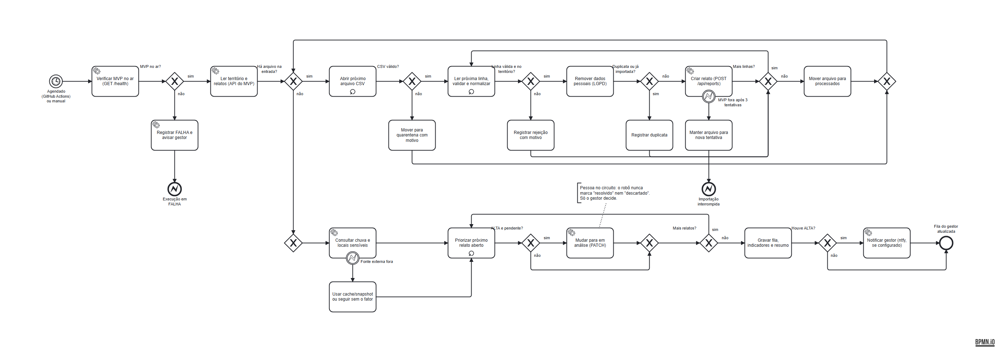

| Integrante | RM |
|---|---|
| Guilherme Rocha Bianchini | RM97974 |
| Nikolas Rodrigues Moura dos Santos | RM551566 |
| Thiago Jardim de Oliveira | RM551624 |
| Rodrigo Brasileiro | RM98952 |
| Professores | Bruno Diniz e Cibele Ribeiro |
|---|---|
| Repositório da automação | $REPO_URL |
| Vídeo demonstrativo | $VIDEO_URL |
| MVP público | https://caminholivre-gs.azurewebsites.net |
| Repositório do MVP | https://github.com/santos-nikolas/caminho-livre |
| Data | $DATA |
Caminho Livre é um mapa colaborativo para identificar, organizar e acompanhar barreiras de acessibilidade em calçadas e travessias: rampas bloqueadas, calçadas obstruídas e travessias com barreira. O público são pedestres com deficiência ou mobilidade reduzida, idosos e cuidadores. O piloto cobre o entorno do campus FIAP Paulista (São Paulo, SP), cerca de 1,2 km × 1,5 km.
| Problema do cidadão | As barreiras são relatadas de forma dispersa e ninguém acompanha se foram resolvidas. |
|---|---|
| Problema operacional (alvo desta automação) | Mesmo com o mapa no ar, dois trabalhos continuam manuais nos bastidores: (1) redigitar no mapa os relatos que chegam fora do app, em planilha, com dados pessoais e duplicatas no meio; (2) olhar relato por relato e decidir, sem critério registrado, o que é urgente. |
| O que é real e o que é cenário | A triagem roda sozinha no GitHub Actions contra o MVP público e já mudou relatos para "em análise" em produção (seção 8). A importação também funciona contra o MVP real, mas não há convênio com a central 156, vistorias ou ONGs: esses canais são o cenário que justifica a automação, e a planilha de exemplo é fictícia, com cada linha marcada como [demonstração]. |
| ODS | ODS 10 (redução das desigualdades) e ODS 11 (metas 11.2 e 11.7: acesso seguro e inclusivo a espaços públicos). |
Desenvolver um robô que leva ao MVP os relatos recebidos em planilha e que, agendado no GitHub Actions, reavalia sozinho os relatos abertos com dados públicos e entrega ao gestor uma fila priorizada e explicada, com auditoria completa de cada passo.
| Antes (manual) | Depois (robô) |
|---|---|
| Alguém redigita cada linha das planilhas no mapa. | Quem recebe a planilha a coloca em entrada/ e roda python rodar.py importar. O robô valida, limpa e cria os relatos pela API. |
| Nome e telefone de quem relatou circulam nas planilhas. | Os dados pessoais são descartados antes do envio e nunca aparecem no log. |
| A mesma barreira entra duas vezes, por canais diferentes. | Duplicatas a até 15 m, da mesma categoria, são detectadas. |
| O gestor decide no olho o que é urgente. | Score explicável, cruzado com hospitais, escolas e metrô (OpenStreetMap) e com a previsão de chuva (Open-Meteo). |
| Casos urgentes esperam alguém perceber. | A cada execução agendada, relatos ALTA ainda pendentes vão para "em análise" no MVP, sem ninguém disparar nada. |
Benefício para o cidadão: um relato que chegasse por outro canal entraria no mesmo mapa, com o mesmo acompanhamento de status. A barreira em frente a um hospital ou numa saída de metrô é atendida antes. O status "em análise" dá um retorno visível de que o relato foi visto.
O desenho completo está em BPMN 2.0 (docs/processo-robo.bpmn, que abre no bpmn.io ou no Camunda Modeler). A figura abaixo mostra o processo de ponta a ponta. Na linha de cima ficam o início e a etapa 1 (importação), e na de baixo a etapa 2 (triagem). Tarefas com o símbolo ↻ repetem para cada item, e os eventos de erro mostram onde as exceções são tratadas.

| Início | Evento de tempo: agendamento do GitHub Actions (cron: "0 * * * *"). O GitHub não garante o horário: entre 14/11 e 17/11/2026 foram 10 execuções, com intervalos de 3,5 a 10 horas. Também pode ser iniciado por python rodar.py ou pelo botão Run workflow. No Actions a pasta entrada/ fica vazia (não é versionada, porque as planilhas podem ter dados pessoais), então lá o robô faz a triagem. A importação roda na máquina de quem recebeu a planilha. |
|---|---|
| Entradas | CSVs em entrada/ (colunas latitude; longitude; categoria; descricao; canal; contato). API do MVP (/health, /api/config, /api/reports). Open-Meteo (chuva em 24 h). OpenStreetMap via Overpass (locais sensíveis). |
| Etapas | 0. Trava contra execução dupla e checagem de saúde do MVP. 1. Importação: para cada arquivo → para cada linha: validar e normalizar, remover dados pessoais, checar idempotência e duplicata, criar o relato. 2. Triagem: consultar os fatores externos → para cada relato aberto: calcular o score e decidir a ação → gravar fila, indicadores e resumo → notificar. |
| Decisões | MVP no ar? · CSV válido? · Linha válida e no território? · Duplicata ou já importada? · Prioridade ALTA e pendente? · Houve ALTA para notificar? |
| Repetições | Arquivos do lote · linhas de cada arquivo · relatos abertos · novas tentativas HTTP. |
| Exceções | MVP fora ou instável · queda no meio do lote · 422 do MVP · token inválido · arquivo vazio, inválido ou em formato errado · fonte externa fora · execução concorrente · erro inesperado (ver seção 6). |
| Saídas | Relatos criados e status alterados no MVP · saida/fila_priorizada.json e .csv · saida/indicadores.json · saida/execucoes/<run_id>.json · logs/robo-AAAA-MM-DD.jsonl · arquivos em processados/ ou quarentena/ · push ntfy, quando configurado. |
| Tecnologia | Uso e justificativa |
|---|---|
| Python 3.11+ (só biblioteca padrão) | Todas as fontes têm API, então não há tela para o robô clicar e um RPA de interface (UiPath ou Power Automate Desktop) seria mais frágil. Em Python o robô é versionado, testado no CI e reproduzível sem instalar nada: urllib (HTTP), csv, sqlite3 (estado), unittest. |
| GitHub Actions | Agendador gratuito, segredos protegidos e artefatos de log por execução. Pede uma execução por hora, mas o GitHub espaça as execuções agendadas quando está com carga. É o mesmo CI que a equipe usa no componente de DevOps. |
| API FastAPI do MVP | Contrato de integração real: criar relatos, listar e mudar status com token de gestor. |
| OpenStreetMap (Overpass API) | Dado aberto (ODbL) com hospitais, clínicas, escolas, assistência social e acessos ao metrô do território. |
| Open-Meteo | Previsão de chuva sem chave de API. Com chuva, uma barreira obriga o pedestre a desviar pela rua molhada. |
| SQLite local | Idempotência (impressão digital de cada linha) e cache das fontes externas. |
| ntfy.sh | Push opcional para o gestor, o mesmo serviço dos alertas de observabilidade do MVP. Está implementado e testado, mas desligado em produção: o segredo NTFY_URL não foi configurado, e o log registra notificacao_desativada. |
| BPMN 2.0 (bpmn.io) | Desenho do processo em formato padrão e editável. |
-23,5646), comum no Excel em português.GET /api/config, então a regra é a mesma do MVP.[removido]), com o canal de origem anotado e limite de 280 caracteres.| Fator | Pontos |
|---|---|
| Categoria: rampa bloqueada / travessia com barreira / calçada obstruída | 40 / 35 / 25 |
| Cada dia aberto | +5 (teto 30) |
| Hospital, clínica, escola, assistência social ou acesso ao metrô a ≤ 100 m / ≤ 200 m | +20 / +10 |
| Chuva prevista ≥ 5 mm nas próximas 24 h | +10 |
| Outros relatos abertos a até 30 m (recorrência) | +10 cada (teto 20) |
Classificação: ALTA ≥ 70 (prazo sugerido de 2 dias) · MÉDIA ≥ 45 (7 dias) · BAIXA < 45 (15 dias). Cada item da fila carrega a lista de motivos. Fila real da execução agendada de 16/11/2026, 20:47 UTC, no GitHub Actions. Com 8,4 mm de chuva previstos, três relatos chegaram a 70 pontos e foram movidos para "em análise". O relato 08fc1e17 já tinha sido movido em 15/11, por isso aparece como "mantido":
$EXEMPLO_FILA_PRODUCAO
Só relatos ALTA ainda pendentes mudam para em_analise, via PATCH com o token de gestor. O robô nunca devolve um relato para pendente: se a chuva passa e o score cai, o relato continua em análise e a fila mostra a prioridade nova. O robô nunca marca resolvido nem descartado: essas decisões afetam o cidadão e ficam com uma pessoa. Há um teste automatizado que garante isso.
| Falha prevista | Reação do robô |
|---|---|
| MVP fora do ar, timeout ou HTTP 5xx/429 | 3 tentativas com backoff exponencial (2 s, 4 s). Se persistir: status FALHA, código de saída 1 (a execução fica vermelha no Actions e o GitHub avisa por e-mail quem mantém o workflow), push se NTFY_URL estiver configurado, e o arquivo continua na entrada. |
| MVP cai no meio de um lote | Interrompe e mantém o arquivo. As linhas já enviadas ficam registradas, então na próxima execução só as restantes são enviadas. |
| MVP recusa a linha (422) | Registra o motivo, marca a linha como rejeitada e segue. |
| Token de gestor inválido (401/403) | FALHA explícita token_invalido, sem novas tentativas. |
| Token ausente | Prioriza e grava a fila, mas não altera status. Alerta no log. |
Arquivo vazio, sem colunas obrigatórias, binário ou .xlsx | Vai para entrada/quarentena/ com um arquivo .motivo.txt. Os demais arquivos seguem. |
| Dados duplicados ou inconsistentes | Duplicata ignorada com referência ao relato existente. Coordenada fora do território, impossível ou categoria desconhecida são rejeitadas com motivo. |
| Open-Meteo fora | Degrada: segue sem o fator chuva e registra fatores_indisponiveis na fila. Aconteceu na execução agendada de 17/11: três timeouts de conexão, e a triagem seguiu com status SUCESSO_COM_ALERTAS. |
| Overpass (OSM) fora | Tenta o espelho, depois o cache local (7 dias), depois o snapshot versionado em dados/, e só então segue sem o fator. Aconteceu na execução real de 14/11: o Overpass devolveu 502 e 504, e o espelho respondeu. |
| Push para o gestor falha | Alerta notificacao_falhou no log e status SUCESSO_COM_ALERTAS. A mudança de status no MVP já foi feita. |
| Execução concorrente | Trava em arquivo: a segunda execução é ignorada, com registro. Trava esquecida há mais de 30 min é liberada. |
| Erro inesperado | Capturado no orquestrador, registrado com o tipo e terminado com status FALHA. Nenhuma falha silenciosa. |
Cada evento é uma linha JSON em logs/robo-AAAA-MM-DD.jsonl com data e hora UTC, run_id, nível, etapa, evento, mensagem e referência (arquivo e linha, ou id do relato). Cada execução também grava um resumo com início, fim, status, contadores, alertas e erros. Antes de gravar, o robô remove os campos contato, nome, telefone, email e descricao e mascara telefone, e-mail e CPF em qualquer texto.
$LOG_DEMO
$RESUMO_PRODUCAO
As amostras completas estão em logs/amostras/. No agendamento, os logs de cada execução ficam como artefatos do GitHub Actions por 30 dias.
| Direção | Contrato |
|---|---|
| Robô → MVP | POST /api/reports cria os relatos importados · PATCH /api/admin/reports/{id} com {"status":"em_analise"} e Authorization: Bearer <token de gestor>. |
| MVP → Robô | GET /health (saúde e versão) · GET /api/config (território) · GET /api/reports (relatos para duplicata e triagem). |
| Robô → gestor | saida/fila_priorizada.json e .csv (fila ordenada com motivos) · saida/indicadores.json (recebidos, revisados, resolvidos, taxa de resolução, tempo até revisão). No Actions, ficam como artefato de cada execução. Nenhum outro sistema lê esses arquivos hoje: quem consome o resultado do robô é o MVP, pela API. |
O resultado aparece no próprio MVP: os relatos importados viram pins novos no mapa e os de prioridade ALTA passam a "em análise", visível para o cidadão.
| Data (UTC) | Execução | O que o robô fez no MVP público |
|---|---|---|
| 14/11/2026 14:01 | Manual, com a planilha de exemplo | Criou 4 relatos [demonstração], barrou 1 duplicata, rejeitou 3 linhas, mandou 1 planilha para a quarentena e removeu um telefone (Figura 3). |
| 15/11/2026 10:21 | Agendada no Actions | Moveu 08fc1e17 para "em análise": travessia a 52 m do hospital Pró Matre, 70 pontos. |
| 16/11/2026 20:47 | Agendada no Actions | Com 8,4 mm de chuva previstos (+10), moveu mais 3 relatos para "em análise", incluindo um enviado pela própria página do MVP em 15/11 (Figura 5). |
Os testes de ponta a ponta sobem um MVP falso (tests/mvp_falso.py) com as mesmas rotas, regras de território e token do MVP real, além de falhas programáveis (rota fora do ar, 503 N vezes). Comando: PYTHONPATH=src:tests python -m unittest discover -s tests -v.
| Tipo | Cenário testado | Resultado |
|---|
A saída completa está em tests/evidencias/resultado-testes.txt. Também houve execuções contra a produção: em modo simulação, depois real pelo terminal (4 relatos criados, 1 duplicata barrada, 3 linhas rejeitadas, 1 arquivo em quarentena) e real pelo GitHub Actions (status SUCESSO, Figura 4). Desde então, as 10 execuções agendadas até 17/11 terminaram com sucesso (Figura 6).
.env, ignorado pelo Git) ou nos segredos do GitHub Actions.contato nunca é enviada. Telefone, e-mail e CPF na descrição são trocados por [removido] antes do envio. O MVP também sanitiza, então são duas camadas.[demonstração].| Repositório GitHub (automação) | $REPO_URL |
|---|---|
| Vídeo demonstrativo (até 3 min) | $VIDEO_URL |
| MVP público | https://caminholivre-gs.azurewebsites.net |
| Repositório do MVP | https://github.com/santos-nikolas/caminho-livre |